Driving at night is much more dangerous than driving during the day. Many people do not see as well at night. When taking a trip, it is safer to drive during daylight hours. Also, never drive when you are tired.
Headlights
Slow down when driving at night and be sure you can stop within the distance lit by your headlights.
You must use your headlights beginning 30 minutes after sunset and ending 30 minutes before sunrise, or anytime when individuals or vehicles cannot be seen clearly for at least 1,000 feet.
Avoid looking directly into the headlights of approaching vehicles; shift your eyes down to the lower right side of your traffic lane.
Use your low beam headlights when:
- Within 500 feet of an approaching vehicle
- Following closely (within 300 feet) behind another vehicle
- Driving on lighted roads
- Driving in fog, heavy rain, sleet, snow, or dust
If you must park on an unlighted highway at night, leave your parking lights or low beam headlights on.
Highway Driving
Freeways, toll-roads, throughways, turnpikes, and expressways are designed for maximum safety, but you must know how to use them properly. In Texas, a highway is defined as the width between the boundary lines of a publicly maintained way, any part of which is open to the public for vehicular travel.
Before Using a Highway
Plan your trip in advance so you know your entrance, direction, and exit. Make sure you and your car are in good condition. If you cannot or do not want to drive at or above the minimum speed limit, do not use the highway.
Entering the Highway
- You must yield the right-of-way to vehicles already on the highway.
- Enter the speed change lane, stay to the right, signal left, and when it is clear, increase your speed to merge with the flow of traffic.
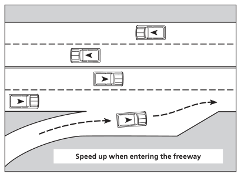
Speed up when entering the freeway
Driving on the Highway
Choose the Proper Lane
- Use the right lane to drive at the minimum posted speed limit or below the normal flow of traffic.
- Use the middle or left lane if you are traveling faster than other traffic or passing other vehicles.
- If you plan to leave the freeway soon, change to the exit lane as soon as possible.
Observe Specific Instructions
Observe specific instructions indicating the lane you should drive in.
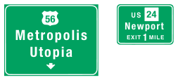
Metropolis · 56 · Newport · 24 EXIT 1 MILE · US · Utopia
Once You are in the Proper Lane
- Stay in the middle of your lane.
- Do not weave in and out of traffic.
- Maintain a constant speed. Keep pace with the traffic. Don’t speed up and slow down unnecessarily.
- Stay at least two seconds behind the vehicle ahead of you. In bad weather, increase the time to at least four seconds. Watch the cars ahead of you. Be prepared if one of the cars ahead of you stops suddenly.
- Adjust your speed to allow others to enter the highway safely.
- Vehicles in any lane, except the right lane used for slower traffic, should be prepared to move to another lane to allow faster traffic to pass.
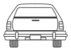
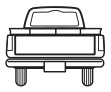
Leaving the Highway
- Move into the proper lane well in advance of the exit. The greater the amount of traffic, the earlier you should move into the proper lane. Exit signs are usually placed at least 1,000 yards ahead of the exit.
- Slow down on the exit ramp so by the time you are off the highway, you are within the new, slower speed limit.
Fight Highway Hypnosis
A condition of drowsiness or unawareness can be brought on by reduced activity and steady sounds of wind, engine, and tire hum. This is known as highway hypnosis. All drivers should be aware of its danger and of the methods for fighting it.
- Stop often. Even if you are feeling well, you should stop at least every two hours or every 100 miles. Get out of your car and walk around. Allow your muscles to relax.
- Do not drive more than eight hours per day.
- Keep shifting your eyes. Look at different objects; near and far, left and right. Read the road signs as you approach them. Check your rearview mirror.
Highway Safety Tips
- Keep a window open so there is always fresh air in the car to help keep you alert and awake.
- On bright days, wear good sunglasses. Never wear sunglasses at night.
- Stay out of another driver’s blind spot. Traveling where the driver ahead of you cannot see your vehicle can be dangerous. Stay behind or go around the other vehicle. Do not follow to the side.
- Avoid using a cell phone while driving; use may cause distraction and driver inattention. If you must use a cell phone, safely pull off the road or use a hands-free headset. If you are under 18 years of age, it is illegal to use a cell phone while driving even if it is a hands-free device except in the case of emergency.
Vehicle Breakdown
- If you can’t get the car off the road, get everyone out of the car and off the road. Portable warning devices should be used to warn oncoming traffic.
- Move your car off the pavement to the side of the road. A car with a flat tire or blowout can be driven slowly off the road.
- Turn on your emergency warning lights. If you do not have warning lights, use your taillights. At night, in addition to your taillights and warning lights, turn the lights on inside of the car.
- Tie a white cloth to your radio antenna, door handle, or some other place where it may be easily seen. If you do not have a white cloth, raise your hood.
Controlling a Car in Special Situations
There is one basic rule which applies in all driving situations, think before you act.
Steering Out of a Skid
An automobile skids when its tires lose their grip on the road surface. If the car starts to skid, follow these safety tips.
- Do not hit the brakes suddenly and hard. Take your foot off the gas pedal (accelerator).
- Turn your steering wheel in the direction of the skid. As you recover control, gently straighten the wheels.
- Avoid a situation that could cause a skid by slowing down when the road and weather conditions are poor. Also, check your car’s tires. Old or worn tires that have minimal or damaged tread are dangerous. (In the illustration below, the direction of the skid is to the right.)
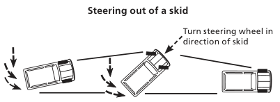
Steering out of a skid · Turn steering wheel in direction of skid
Brake Failure
If your car brakes fail, do not panic. Remember you can use your parking brake and shift to a lower gear. Apply your parking brake cautiously to keep from locking the brakes and throwing your car into a skid.
Running Off the Pavement
If something causes you to swerve and run off the pavement:
- Do not hit the brakes suddenly and hard. Grip the steering wheel tightly and take your foot off the gas pedal.
- Use your brakes carefully and do not swing back onto the pavement. Wait until your speed is reduced, check the traffic behind you, and then carefully drive back onto the pavement.
Flat Tire or Blowout
If you have a flat tire or a blowout:
- Do not hit the brakes suddenly and hard
- Take your foot off the gas pedal and gently apply the brakes
- Steer straight ahead to a stop
Driving Down a Steep Hill
When driving down a steep hill, you can shift your car into a low gear to help slow your vehicle. Never coast in neutral or for cars with a standard transmission, never coast with your foot on the clutch.
Winter Driving
Most drivers realize winter creates additional hazards, but many drivers don’t know what to do about it. Here are a few precautions you should follow during winter.
| Safety Tip | Explanation |
|---|---|
| Maintain a safe interval | Increase the distance from the vehicle ahead of you according to the conditions of the pavement. Many rear-end collisions occur on icy streets because drivers don’t leave space to stop. Snow tires will slide on ice or packed snow. To keep safe, you must keep your distance. |
| Reduce speed to correspond with conditions | There is no such thing as a “safe” speed range at which you may drive on snow or ice. You must be extremely cautious until you are able to determine how much traction you can expect from your tires. Avoid locking of brakes on ice as it will cause a loss of steering and control. Every city block and every mile of highway may be different, depending upon sun or shade and the surface of the road. |
| Keep windows clear | Remove snow and ice before you drive, even if you’re just driving a few miles. Make certain the windshield wipers and defroster are working properly. |
| Watch for danger spots ahead | There may be ice on bridges when the rest of the pavement is clear. Snow melts more slowly in shady areas. Take precautions when approaching turns. |
| Get a feel for the road | Start out very slowly. It is useless to burn the rubber off your tires by spinning the wheels. Test your brakes gently after the car is in motion to determine how much traction you have. Start slowing down before you come to a turn. |
| Equip your vehicle with chains or snow tires | Chains are the most effective and should be used where ice and snow remain on the road. One word of caution, neither chains nor snow tires will permit you to drive on slick pavement at normal speeds so don’t get a false feeling of security. |
Roundabouts
Modern Roundabout
A modern roundabout is a one-way, circular intersection where traffic flows counter clockwise around a center island. Modern roundabouts use yield signs rather than traffic lights to control vehicles entering the intersection. This intersection design only has eight potential conflict points, opposed to a traditional “four-way” signalized intersection which has 32 potential conflict points.
Driving in a Modern Roundabout
Road signs, pavement markings and its design help guide drivers through a modern roundabout.
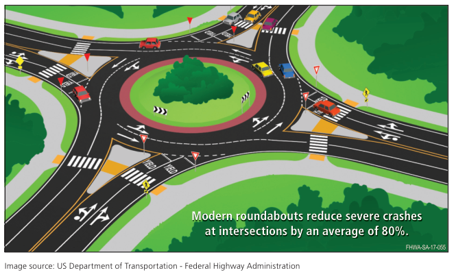
Modern roundabouts reduce severe crashes at intersections by an average of 80%.
To drive in a modern roundabout, follow these simple steps: slow down as you approach the intersection, yield to traffic already in the circle, enter the circle and follow the loop in a counter clockwise direction, and then make a right turn to exit the roundabout.
There are two types of modern roundabouts: single-lane roundabouts and multi-lane roundabouts.
Single-lane roundabout: Slow down as you approach the roundabout intersection and observe any posted advisory speed signs. Yield to traffic driving in the circle. When there is an acceptable gap, enter the circle and travel counterclockwise around the circle. Make a right turn by using your turn signal when exiting the circle.
Observe traffic signs and pavement markings when navigating a roundabout. Also, look for bicyclists and pedestrians using the crosswalks on the roundabout approaches and exits.
Multi-lane roundabouts: Go through the same steps as a single-lane roundabout and follow these additional steps. When approaching a multi-lane roundabout, observe the advance lane movement sign for choosing the correct entry lane. Also, do not change lanes while driving in the circle.
When navigating all roundabouts, give space for large vehicles, such as semitrailers, buses, and fire trucks that need more than one lane when driving around the circle. Also, pull over for emergency vehicles on the roundabout approaches and exits. However, do not stop for emergency vehicles in the roundabout circle. Clear the circle first and then pull over for the emergency vehicle.
Floods
Floods are one of the most common hazards in the U.S. Nearly half of all flash flood fatalities are vehicle-related.
These are the facts:
- Six inches of water will reach the bottom of most passenger cars, causing loss of control and possible stalling.
- Twelve inches of water will float many cars.
- Two feet of rushing water will carry away pick-up trucks, SUVs, and most other vehicles.
- Water across a road may hide a missing segment of roadbed or a missing bridge. Roads weaken under floodwater and drivers should proceed cautiously after waters have receded since the road may collapse under the vehicle’s weight.
National Weather Service and Texas Division of Emergency Management officials say if your vehicle stalls in floodwater, get out quickly and move to higher ground. Better yet, when there’s water on the road, Turn Around Don’t Drown®. Saving your life is as simple as choosing an alternate route.
Turn Around Don’t Drown® (Note: Per National Weather Service any use of Turn Around Don’t Drown must include the registration symbol.)
Image source: US Department of Transportation - Federal Highway Administration
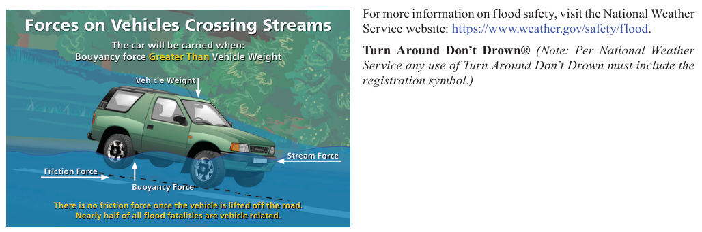
Forces on Vehicles Crossing Streams · For more information on flood safety, visit the National Weather Service website: https://www.weather.gov/safety/flood. · The car will be carried when: Bouyancy force Greater Than Vehicle Weight · Vehicle Weight · Stream Force · Friction Force · Buoyancy Force · There is no friction force once the vehicle is lifted off the road. Nearly half of all flood fatalities are vehicle related.
Share the Road with Trucks (Large trucks and truck-tractor combinations)
Whether you are sharing the road with a passenger car, motorcycle, truck, bus, or other vehicle, it is important to obey traffic laws, abide by the rules of the road, and drive defensively. Trucks are designed to carry products to and from towns and cities; they are designed to be as maneuverable as cars. Trucks have longer stopping and accelerating distances, a wider turning radius, and weigh more.
Passing
- When passing a truck, first check to your front and rear, check mirrors and blind spots, then move into the passing lane only if it is clear and you are in a legal passing zone. Let the truck driver know you are passing by flashing your headlights, especially at night. The truck driver should make it easier for you to pass by staying to the far side of the lane.
- On a level highway, it takes three to five seconds longer to pass a truck than a car. On an upgrade, a truck often loses speed so it’s easier to pass than a car. On a downgrade, the truck’s momentum causes the truck to go faster so you may need to increase your speed. Complete your pass as quickly as possible and don’t stay alongside the other vehicle.
- If the driver flashes the truck’s lights after you pass, it’s a signal that it is clear for you to pull back in front of the truck. Be sure to move back only when you can see the entire front of the truck in your rearview mirror. After you pass a truck, maintain your speed.
- When a truck passes you, help the truck driver by keeping to the far side of your lane. You’ll make it easier for the truck driver if you slightly reduce your speed. Don’t speed up while the truck is passing. After passing, the truck driver should signal to let you know he is returning to your lane.
- When you meet a truck coming from the opposite direction, keep as far to the side as possible to avoid a sideswipe crash and to reduce the wind turbulence between the two vehicles. Remember, turbulence pushes vehicles apart; it does not pull them together.
Following a Truck
- Tractor-trailers take longer to stop than a car traveling at the same speed. The average passenger car traveling at 55 mph can stop in approximately 240 feet, which is about three-fourths the length of a football field. A fully loaded tractor-trailer may take more than 400 feet to completely stop, well over the length of a football field.
- If you’re following a truck, stay out of its blind spot at the rear. The blind spot is the area behind the truck that the driver cannot see in his rearview mirrors. Avoid following too closely, and position your vehicle so the truck driver can see your vehicle in the truck’s side view mirror. An excellent rule of thumb for motorists sharing the road with a tractor-trailer is, “If you can’t see the truck driver in his side mirror, he can’t see you.” By avoiding the truck driver’s blind spot, you will have a good view of the road ahead, and the truck driver can give you plenty of warning for a stop or a turn. This will allow you more time to react and make a safe stop.
- When you follow a truck at night always dim your headlights. Bright lights from a vehicle behind will blind the truck driver when the lights reflect off the truck’s large side mirrors.
- If you are stopped behind a truck on an upgrade, leave space in case the truck drifts back when it starts to move. Also, keep to the left in your lane so the driver can see you’re stopped behind the truck.
Right Turns
Pay attention to turn signals. Trucks make wide, right turns and sometimes leave an open space to the right just before the turn. To avoid a crash, don’t pass a truck on the right if there is a possibility the truck might make a right turn.
Backing Crashes
Never cross behind a truck preparing to back up. When a truck driver is preparing to back the truck from a road into a loading area, the road is temporarily blocked. Wait for the truck to complete its maneuver before trying to pass. If you pass too closely behind the truck, a crash may occur because you are in the truck’s blind spot.
Maneuverability
On multi-lane highways, tractor-trailers stay in the center lane to help the flow of local traffic on and off the highway. Staying in the center lane also increases the truck driver’s options if he/she has to switch lanes to avoid a crash. Be aware of common mistakes drivers should avoid when driving around trucks and buses.
Cutting Off a Vehicle to Reach Your Exit or Turn
Never cut in front of a truck. Cutting into the open space in front of a truck or bus removes the driver’s cushion of safety. Trying to beat a truck to a single-lane construction zone represents a particularly dangerous situation. Either slow down and exit or stay behind the truck.
Never Underestimate the Size and Speed of an Approaching Tractor-trailer
Because of its large size, a tractor-trailer often appears to be traveling at a slower speed than it is. A substantial number of car and truck collisions take place at intersections because the driver of the car does not realize how close the truck is or how quickly it is approaching.
Share the Road with Motorcycles
Individuals who operate a motorcycle have the same rights and privileges as any other vehicle on the road.
For various reasons, drivers may not see the motorcyclist, and approximately one-half of all motorcycle crashes involve another vehicle. According to the National Highway Traffic Safety Administration, motorcyclists are about 35 times more likely to die in a traffic crash than passenger car occupants. A few of the most common reasons are provided below.
- Many drivers tend to look for other cars, not for motorcyclists.
- The profile of a motorcycle is much smaller than the profile of a car, making an approaching motorcyclist harder to see.
- Estimating the distance and speed of a motorcycle is more difficult than it is for a car.
- Motorcycle riding requires frequent lane movements to adjust to changing road conditions.
- Distracted driving, such as texting or talking on a cell phone.
Situations When Crashes Are Most Likely to Occur
Motorcycle crashes are most likely to occur in the high-risk situations described below.
Left Turns
The most common crash between cars and motorcycles is at an intersection when the driver of a car is making a left turn in front of a motorcycle.
A Car’s Blind Spot
Motorcyclists are often hidden in a vehicle’s blind spot or missed in a quick look due to their smaller size. Always make a visual check for motorcycles by checking mirrors and blind spots before entering or leaving a lane of traffic and at intersections.
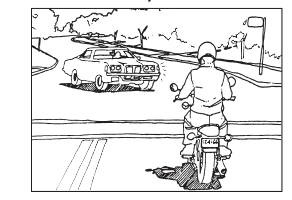
Hazardous Road Conditions
Road conditions that are a minor annoyance to you may pose a major hazard to motorcyclists. Motorcyclists may suddenly change speed or adjust their position within a lane in reaction to changes in the weather, road, or traffic conditions. This may include potholes, gravel, railroad crossings, and wet or slippery surfaces which impair the motorcyclists’ braking and handling abilities. Expect and allow room for such actions by the motorcyclist.
Strong Winds
A strong gust of wind can move a motorcycle across an entire lane if the rider isn’t prepared for it. Wind gusts from large trucks in the other lane can also be a hazard.
Large Vehicles
A large vehicle such as a van, bus, or truck can block a motorcycle from a driver’s view and the motorcyclist may seem to suddenly appear from nowhere.
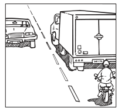
Motorcycle Driving Awareness
Look Out for Motorcyclists
Although you may not see any cars, be aware there may be a motorcycle. Be careful at intersections, and always take a second look for a motorcycle before turning at an intersection, particularly when making left turns.
Signal Your Intentions
Always signal before changing lanes or merging with traffic. This allows the motorcyclist to anticipate traffic flow and find a safe lane position. Signal even if you don’t see cars or motorcycles. Be careful when making left turns across lanes of approaching traffic. Look carefully in all directions for approaching motorcyclists. Don’t be fooled by a flashing turn signal. Motorcycle signals usually are not self-canceling and riders sometimes forget to turn them off. Wait to be sure the motorcycle is going to turn before you proceed.
Respect a Motorcycle
Allow the motorcyclist a full lane width. Although it may seem as though there is enough room in the traffic lane for an automobile and a motorcycle, the motorcycle is entitled to a full lane and may need the room to maneuver safely. Do not attempt to share the lane with a motorcycle.
Allow Plenty of Space When Following a Motorcycle
The slightest contact can mean a spill or injury for the rider. Allow more following distance, at least four to six seconds, when following a motorcycle so the motorcyclist has enough time to maneuver or stop in an emergency. Stop a safe distance behind the motorcyclist at intersections, signals, or crossings. A full vehicle length is recommended to help prevent impact with the motorcycle should your vehicle suffer a rear end collision. In dry conditions, motorcycles can stop more quickly than a car, so being aware and alert at all times can help prevent a collision.
Special Note: If you drive aware of motorcyclists in these situations, you can help make the streets and roads safer for everyone.
Texas Motorcycle Operator Training Program
The Texas Legislature created the Motorcycle Operator Training and Safety program in 1983 and moved its administration from DPS to TDLR in 2020. The Program’s aim is to improve rider skills and reduce the number and severity of motorcycle crashes in Texas. A portion of each motorcycle license fee is used to support this program. The program develops curriculum and monitors motorcycle training classes throughout the state and promotes motorcycle safety and awareness through campaigns, exhibits, and materials.
Contact TDLR at https://www.tdlr.texas.gov/ for more information about motorcycle safety and training courses.
Share the Road with Light Rail
In recent years, light rail has been established in many major cities in Texas. As you travel these areas, you may notice these trains move along the streets just like other vehicles. Light rail is very quiet; and, in fact, quieter than most buses and cars. So whether you are riding a light rail or just walking or driving near the train or tracks, it’s important to stay alert and observe the safety rules.
| Action | Description |
|---|---|
| Stop | - Don’t walk in front of, between, or behind a train. - Trains can’t start or stop quickly regardless of traffic flow. - Do not drive, stop, or park your vehicle on the tracks. It’s dangerous and illegal. |
| Look | - Cross the tracks only at designated crossings and only when it is safe. - Look both ways before crossing the tracks. Trains travel in both directions. - Obey all warning signs, flashing lights, signals, and crossing gates. A law enforcement officer will issue tickets to violators. |
| Listen | - Stay alert. Light rail is quieter than a bus or most cars. You may not hear a light rail coming. - Listen for train horns and signal bells. - Always follow instructions from a law enforcement officer. |
| Don’t | - Never race a train, run in front of a train, or put anything on or near the tracks. - Never try to beat the train to a crossing. Even in a tie, you lose. - Never drive around crossing gate arms. |
Share the Road with Bicycles
A bicycle is a vehicle. Any person riding a bicycle has all of the rights and responsibilities as a driver of a vehicle.
Rules for Motorists and Bicyclists
- Bicyclists are not restricted to the right lane of traffic. One-way, multi-lane streets are one example of this. Another instance is when the bicyclist is changing lanes to make a left turn. The bicyclists should follow the same path any other vehicle would take traveling in the same direction.
- A motorist should merge with bicycle traffic when preparing for a right turn. Avoid turning directly across the path of bicycle traffic.
-
Bicyclists are required to ride as far to the right in the lane as possible only when the lane can be shared safely by a car and a bicycle, side-by-side. Even then, there are certain conditions that allow a bicyclist to take the full lane.
- The bicyclist is overtaking and passing another, vehicle proceeding in the same direction.
- The bicyclist is preparing for a left turn at an intersection or onto a private road or driveway.
- There are unsafe conditions in the road, such as fixed or moving objects, parked or moving vehicles, pedestrians, animals, potholes, or debris.
- The lane is of substandard width, making it unsafe for a car and a bicycle to safely share the lane side-by-side. When this is the case, it is best for the cyclist to take the full lane, whether riding single file or two abreast.
Car-Bicycle Crashes
Be on the lookout for cyclists on the road, especially at intersections. The most common car-bicycle crashes caused by a motorist are:
- A motorist turns left in front of oncoming bicycle traffic. Oncoming bicycle traffic is often overlooked or its speed misjudged.
- A motorist turns right across the path of the bicycle. The motorist should slow down and merge with the bicycle traffic for a safe right turn.
- A motorist pulls away from a stop sign and fails to yield the right-of-way to bicycle cross traffic. At intersections, the right-of-way rules apply equally to motor vehicles and bicycles.
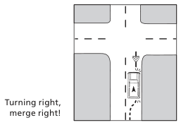
Turning right, merge right!
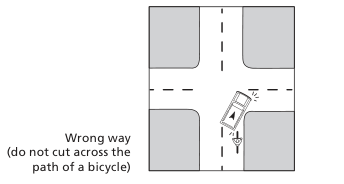
Wrong way · (do not cut across the path of a bicycle)
Image source: Some images in this chapter are courtesy of The MUTCD, 2009 Edition, published by FHWA at mutcd.fhwa.dot.gov/pdfs/2009/pdf_index.htm
Distracted driving
Whenever you are driving a vehicle and your attention is not on the road, you’re putting yourself, your passengers, other vehicles, and pedestrians in danger. Distracted driving can result when you perform any activity that may shift your full attention from the driving task. Taking your eyes off the road or hands off the steering wheel presents obvious driving risks. Mental activities that take your mind away from driving are just as dangerous. Your eyes can gaze at objects in the driving scene but fail to see them because your attention is distracted elsewhere.
Activities that can distract your attention include texting, talking to passengers, adjusting the radio, CD player or climate controls; eating, drinking or smoking; reading maps or other literature; picking up something that fell; reading billboards and other road advertisements; watching other people and vehicles including aggressive drivers; talking and/or texting on a cell phone or CB radio; using telematics devices (such as navigation systems, pagers, etc.); daydreaming or being occupied with other mental distractions.
If drivers react a half-second slower because of distractions, crashes double. Some tips to follow so you won’t become distracted:
- Review and be totally familiar with all safety and usage features on any in-vehicle electronics, including your wireless device or cell phone, before you drive.
- Pre-program radio stations.
- Pre-load your favorite CDs or cassette tapes.
- Clear the vehicle of any unnecessary objects.
- Review maps and plan your route before you begin driving.
- Adjust all mirrors for the best all-round visibility before you start your trip.
- Do not attempt to read, text, or write while you drive.
- Avoid smoking, eating and drinking while you drive.
- Don’t engage in complex or emotionally intense conversations with other occupants.
You need to be able to recognize other drivers who are engaged in any form of driving distraction. Not recognizing other distracted drivers can prevent you from perceiving or reacting correctly in time to prevent a crash. Watch for:
- Vehicles that may drift over the lane divider lines or within their own lane.
- Vehicles traveling at inconsistent speeds.
- Drivers who are preoccupied with maps, food, cigarettes, cell phones, or other objects.
- Drivers who appear to be involved in conversations with their passengers.
Give a distracted driver plenty of room and maintain your safe following distance.
Be very careful when passing a driver who seems to be distracted. The other driver may not be aware of your presence, and they may drift in front of you.
Texting While Driving
It is against the law to read, write, or send messages on a cell phone or other portable wireless device. If your cell phone rings, do not answer the call or respond to the text message. Convictions for violations of this law are subject to fines.
You may use a cell phone to contact law enforcement or during an emergency. If you must make a call, pull safely off the road and make the call. Try to keep the conversation short, or have a passenger make the call for you, if possible.